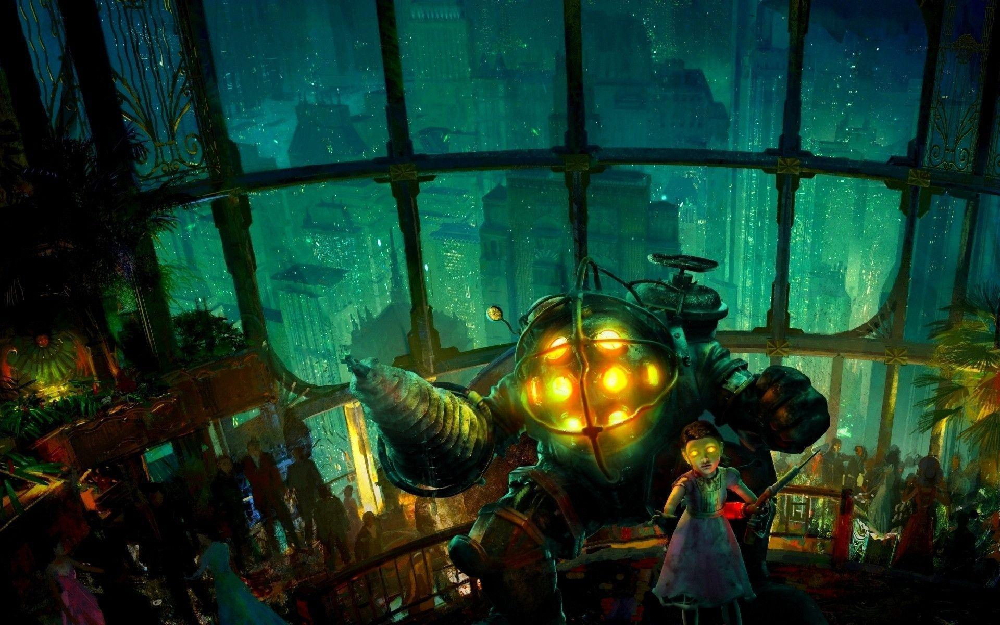
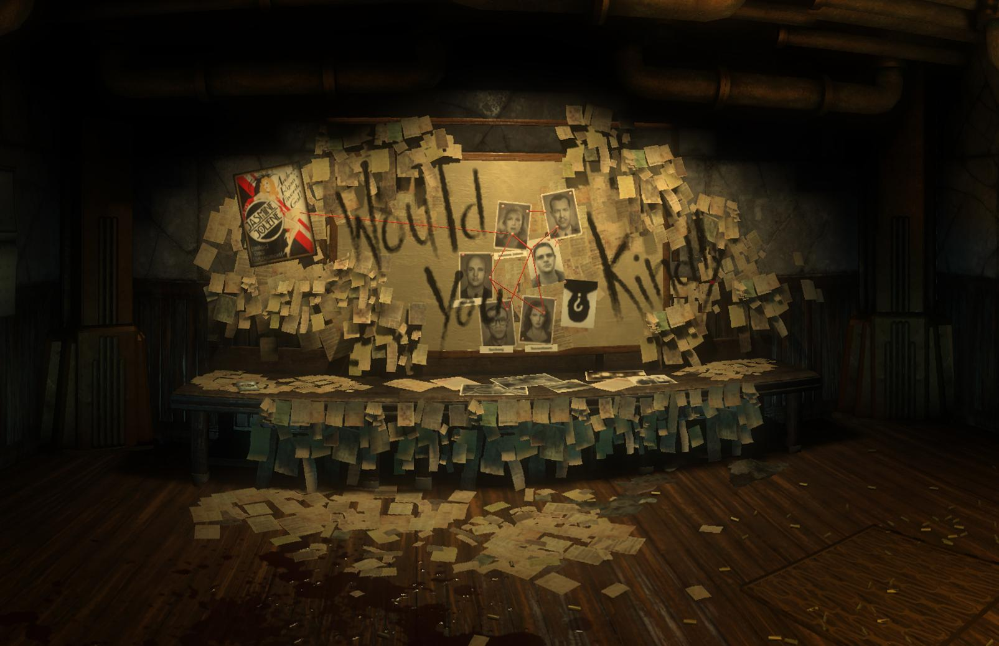

Discovering a Modern Atlantis
There just so happened to be a lighthouse in the middle of the Atlantic Ocean, less than a football field from the cite of your plane crash. Inside the lighthouse there's a small personal submarine with the door open, as if an invitation. Nothing but ocean in every direction, and no idea if anyone is coming to help. Shortly after stepping inside, you find yourself at the bottom of the ocean witnessing the impossible; a sprawling city of skyscrapers, lights, ocean inhabitants, and oddly minimal movement inside the buildings.
That Which Hides Beneath Beauty
After a jaw dropping ride through an underwater wonderland, you dock within one of the towering buildings. The interior was once just as magnificent, but you're too late for that. Electrical cables spark off water seeping in through cracked grand windows, the lights flicker, and figures shift in the shadows. Welcome to the aftermath of a sub-nautical civil war, where the survivors have lost all civility.

Chilling Discoveries
As you explore Rapture, you'll listen to the last words of its lost inhabitants through audio logs, fight through horrifically ruined masterclass architecture, and experience the worst case scenario of absolutist philosophies. Beyond the flashy visuals and gripping story, Bioshock is a critique of unchecked ideologies; as well as an interrogation of free will within a society filled with propaganda. Am I being a little vague regarding one of the cornerstone games fundamental to my love of gaming? You bet your sweet bippy I am! I'd hate to spoil anything in this critically acclaimed collection, and I'm hoping you'll be just interested enough to give it a try! Go ahead, pick up a copy ©.
